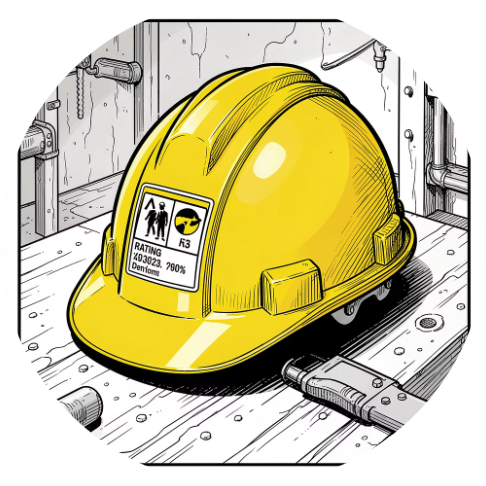
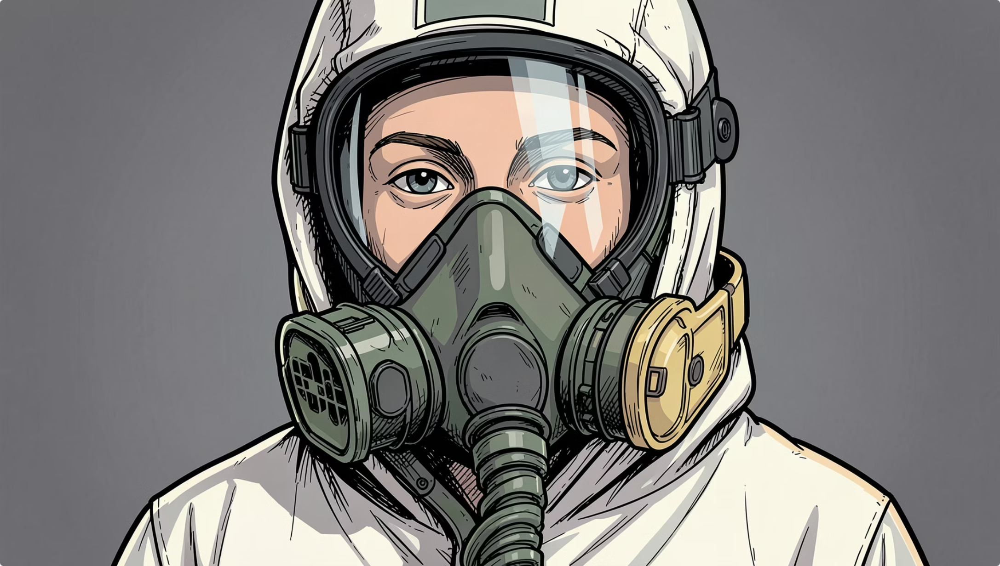
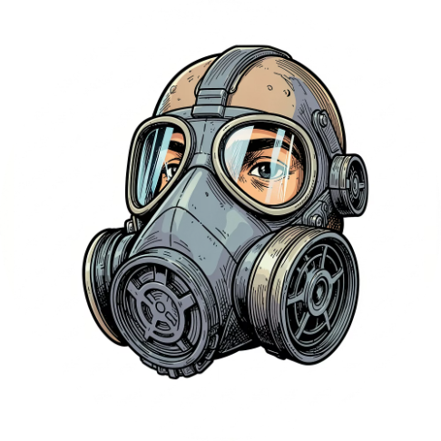
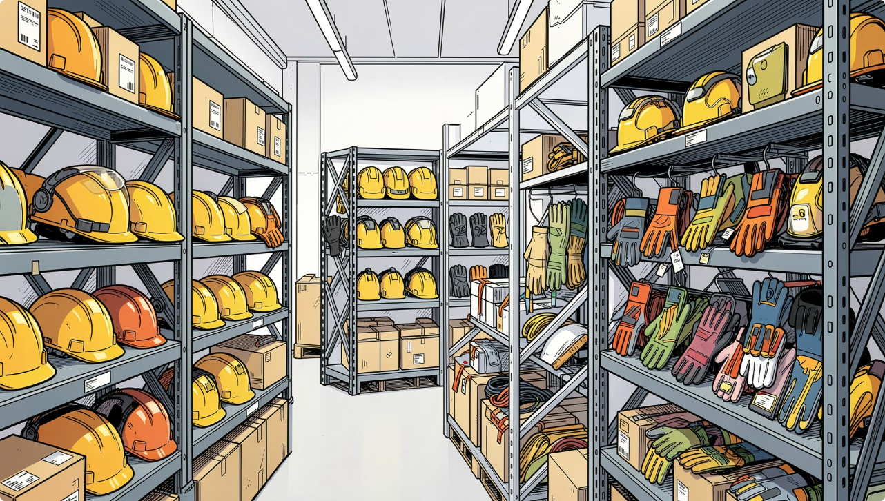
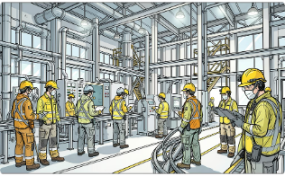

Безопасность труда становится приоритетом, а экипировка — технологичнее и удобнее.
Индивидуальный проект · 2026
Safety
Market
Современные средства индивидуальной защиты: от каски и респиратора до умной экипировки, экзоскелетов и компьютерного зрения.
0основных направлений защиты
0класса риска по ТР ТС 019/2011
0человек в России получают СИЗ
0прогноз рынка России по итогам 2025 года
01 / О проекте
Навигация в мире защиты
Информация о СИЗ разрознена между стандартами, каталогами и отраслевыми материалами. Этот ресурс собирает ключевые сведения в понятную визуальную систему.
Большой ассортимент и множество требований усложняют правильный выбор.
Изучить рынок СИЗ и систематизировать знания в информационном веб-ресурсе.
Многостраничный сайт-каталог на HTML, CSS и JavaScript.
02 / Категории
Система защиты
СИЗ выбирают по опасному фактору, защищаемой части тела и условиям работы.

01 / ГОЛОВА
Каски и шлемы
Защита от ударов и падающих предметов

02 / ДЫХАНИЕ
Респираторы
Барьер от газов, паров, пыли и аэрозолей

03 / ГЛАЗА И ЛИЦО
Очки и щитки

04 / СЛУХ
Наушники

05 / РУКИ
Перчатки
06 / НОГИ
Спецобувь

07 / ОДЕЖДА
Спецодежда
08 / ВЫСОТА
Защита от падения

09 / КОМПЛЕКС
Комбинированные СИЗ
03 / Материалы
Технологии в каждом слое
Новые материалы повышают прочность, огнестойкость и комфорт экипировки.
Kevlarпрочность
Nomexогнестойкость
Twaronзащита от порезов
Rip-stopстойкость к разрыву
Мембраныветер и влага
Датчикимониторинг
ИИконтроль
04 / Цифровизация
От пассивного барьера к активной системе
GPS/ГЛОНАСС, акселерометры и носимые датчики позволяют фиксировать падения, следить за состоянием работника и передавать сигнал тревоги.
Изучить технологии →05 / Эволюция
От шкуры до экзоскелета
Древний мир
Шкуры, бумажные и льняные доспехи
Средневековье
Кожа, кольчуга, металлические латы
XIX–XX века
Первые промышленные СИЗ
1960–1970-е
Kevlar и Nomex
Сегодня
Цифровые СИЗ и экзоскелеты